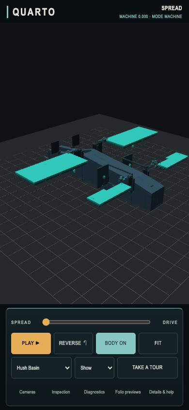
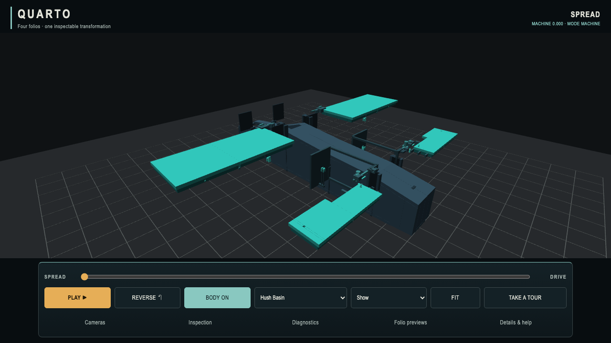

QUARTO / FINAL ZOOM COMPARISON / 6 OCTOBER 2026
A little less zoom.
Orbit and pan felt much better on the owner’s phone. This final narrow pass reduces pinch and wheel travel by about 20%, keeping those accepted controls and the existing framing intact.
20.1–20.7% lessMeasured settled zoom travel
Orbit + pan retainedSame tuned response as the last preview
53 tests passed52 existing tests + corrected zoom test
Draft PR #12 · Previous preview · Measurements and evidence
Pinch / identical zoom-in gesture
Previous preview

Revision · less magnification
Desktop wheel / identical zoom-in input
Previous preview
Revision

Baseline a3f858bcd52cec1b4f264f58238c045ae2c5f608. Each version: 40 zoom traces plus 8 orbit/pan preservation traces. Two bound-clipped traces retain the same stop. Both directions, Inspect/Show, slow input and near/far distance. Initial PNGs are byte-identical. Authority participation: none. No merge or production deployment.